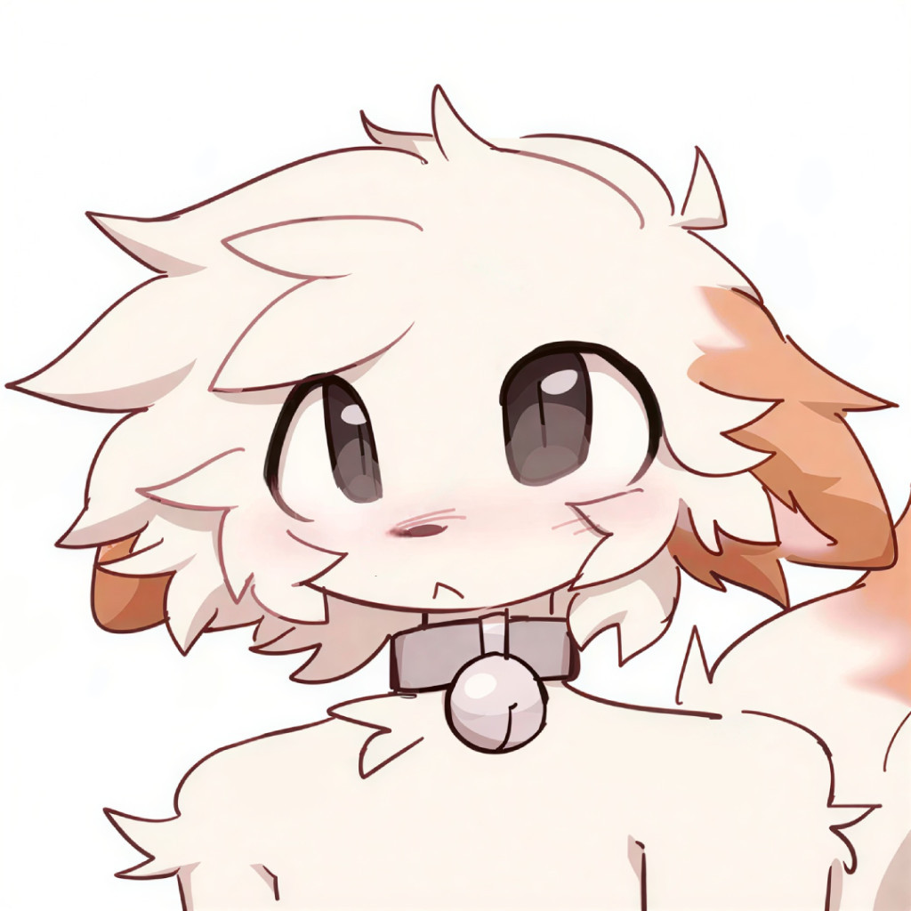

Dexter Morgan
@thegayharborboykisser
Moiii :3
Oon seitsemäntoistavuotias homo cis mies, syntynyt ja kasvatettu Suomessa, ja asun tällä hetkellä pk-seudulla, mutta lapsena asuin Raaseporissa. Mä etsin pitkäaikaista ja vakavaa monogamista suhdetta toisen cismiehen kanssa.
Tämä sivusto on olemassa vaan sitä varten, että jos mä laitan sulle DM:n tai sä laitat mulle, niin voit käydä lukasee ja varmistaa, ettet ole heti "nope", ettei tarvii käyttää aikaa yapattamiseen, jos siitä ei tuu ikinä olee yhtään mitään.
Tässä lisää tärkeitä asioita:
KAIKISTA NÄISTÄ TÄRKEIN
Totuudenmukaisuus! Kerrotaan asioista toisille, vaikka toinen suuttuisi, vaikka toisella olisi hyvä mieli, whatever. Ja myös yhtä tärkeänä, rakentavat väittelyt. Ig toi käy järkeen, mutta tarkotan siis niinkun healthy arguments. Aka, ei että heitetään haukkumasanoja toista kohti ees taas, vaan sitä että "hei, sä teit näin ja näin ja mulla oli tosi epämukava olo sen takia" tai whatever. Argumentteja tulee aina olemaan, niin might as well tehdä ne oikein.
Luottamus ja introverttius
Mä en luota ihmisiin heti. Mulla kestää yleensä aika kauan ennen kun oikeesti luotan ihmiseen ja avaudun kunnolla. Voin kyllä sanoa vulnerable asioita aika helposti, mutta se tulee enemmän information antamisen paikasta kun mistään muualta. Eli jos vaikutan aluksi vähän etäiseltä tai varautuneelta, se ei välttämättä tarkoita ettenkö tykkäisi susta. Oon myös aika introvertti, ja vaikka yritänkin päästä eroon social anxietysta, en oikeestaan halua kumppanikseni mitään super outgoing ihmistä, jonka pitää olla koko ajan menossa ja ihmisten kanssa.
Kiinnostus ja keskustelu
Tykkään siitä, että toinen oikeesti osoittaa kiinnostusta muhun. Jos mä kysyn sulta asioita, niin kysy säkin multa :sob: En halua olla aina se, joka yrittää keksiä jotain sanottavaa ja pitää keskustelua hengissä. Tykkään ihmisistä, jotka oikeesti kuuntelee ja haluaa tietää musta enemmän. Tässä tarkotan nyt niiku Discordissa puhutaan viesteillä. Mutta todennäköisesti eka voice chat ja eka irl tapaaminen tulee olee ihan vitun awkward koska oon anxious mutta kuitenki.
Fyysinen läheisyys
Fyysinen läheisyys on mulle tosi tärkeetä. Oon tosi läheisyydenhakuinen ja avoin uusille asioille. En tarkoita tällä sitä, että pitäisi kiirehtiä mihinkään, vaan että haluan kumppanin, joka itsekin tykkää läheisyydestä ja hellyydestä. En oo ikinä ollut missään oikeessa suhteessa kylläkään, joten toivoisin myös että kumppani lähestyisi uusia asioita rauhallisesti ekoina kertoina.
Oma rauha ja yhdessäolo
Vaikka haluan paljon läheisyyttä, tarviin myös omaa rauhaa. En halua suhdetta, jossa ollaan ihan koko ajan yhdessä, vaikka haluan kyllä suurimmaksi osaksi yhdessä. Ja että päätetään ja suunnitellaan asioita yhdessä ect eikä vaan eletä omia elämiä. Haluaisin enemmän sellaisen tasapainon, että ollaan läheisiä ja tehdään asioita yhdessä, mutta molemmilla on myös omat jutut.
Persoonallisuus ja huumori
Jossain määrin haluaisin, että voitais puhua ihan mistä tahansa ja olla toistemme kanssa täysin omia itsejämme. Mun mielestä olisi aika peak, jos toinen olisi sellainen ihminen, jonka kanssa voi välillä puhua ihan vitun tyhmistä asioista ja viisi minuuttia myöhemmin jostain oikeesti filosofisesta :sob:
Mä tykkään tyhmästä, absurdista, kaoottisesta ja välillä aika synkästäkin huumorista. Oon itse netissä yleensä paljon enemmän silleen "silly" ja randomimpi ja unfiltered kuin mitä ehkä aluksi vaikutan. Saatan sanoa jotain ihan vitun tyhmää ilman mitään syytä, mutta osaan kyllä olla myös erittäin totinen ja filosofinen. Tykkäisin siitä, että näitä molempia voi olla saman ihmisen kanssa.
Furry ja pukeutuminen
Oon turri siis, en mitenkään silleen SUPER MEGA turri mut jonkin verran kuitenki. Mul ei ees oo fursonaa tai mitään mutta oon silleen "into the aesthetic" tai whatever, ja jos raha riittäis ostaisin kyl varmasti fursuitin myös. Sama femboyissa ig, vaikken tiiä lasketaanko mut virallisesti, vaikken kyllä myöskään kiinnosta lasketaanko mut virallisesti. Tykkään useimmiten pitää semmosia perus miesten vaatteita, huppari, farkut, ect. Mutta myös naisellisia vaatteita, ainaki kodin turvassa, esim hameita tai jotain ect. Ei mul oo oikeen mitään muuta vielä mut mun äiti teki mulle sen hameen :3
Nii en kyllä niin laskis itteäni femboyiksi, enemmän vaan siksi että koko termi miesten ja naisten vaatteista (ja töistä ja rooleista ect) on aivan paskaa ja jos joku haluu pitää vittu hametta niin siitä vaan! Ketään ei kiinnosta. Paitsi jos omassa elämässä ei tapahdu tarpeeksi mitään ja vihaa itseään niin pitää laittaa muita alas että oma ego nousee.
NIIN, toivoisin että olet ainakin vähän molempia myös :3
Uskonto
Mä oon todella uskonnonvastainen ja ateisti. Ilmeisesti virallinen termi olisi antitheist. Jos oot vaan ateisti tai agnostic atheist, niin mulle sopii, mutta en pystyisi olemaan uskovaisen ihmisen kanssa, enkä rupee nyt selittää miksi en.
Periaatteessa mäkin oon agnostic atheist, koska en voi nyt tästä vaan todistaa että jumala ei ole olemassa, mutta uskon todennäköisemmin että jos alan kaivaa reikää mun takapihassa lapiolla, niin vastaan tulee maata, jotain kiviä, ja ehkä mato tai kaks, mutta ei kultaharkkoja. Ja vaikka jumala olisikin olemassa, olettaen että hän on all powerful, niin en silti worshippaisi häntä. Jos mä palan helvetissä sen takia että tykkään pojista niin laita mut helvettiin sit, en haluu taivaaseen jossa oon vaan koska hylkäsin osan itsestäni joka on harmiton.
Ulkonäkö
Mua ei oikeestaan kiinnosta vittuakaan miltä mun kumppani näyttää. Jos ei nyt ihan joku gremlin kuitenkaan yknow :sob: Mut mul ei oo myöskään hirveesti varaa sanoa :pray: Enkä osaa sanoo oonko chubby vai ihan läski, mutta oon semi isokokoinen. Pystyn kävellä ja nousta sängystä ihan normaalisti, suurin osa huppareista on kai XL, et emmä NIIN iso oo mut kuitenki. Tarkotuksena oisi tämä paino menettää tulevaisuudessa, mutta jos se on sulle hirvee turn off niin ei vrm tuu toimii
Politiikka
Mä en oikeestaan tiedä politiikasta vittuakaan mitään, ja aina kun tutkin politiikkaa niin mun henkinen terveys menee down the drain, vaikka silleen jossain määrin tykkään politiikasta. Mutta sillä pienellä tiedolla asioista mitä tiedän niin tällä hetkellä laskisin itseni kommunistiksi. Ainakin jossain määrin. Jos tämä on hirveä ongelma ja olet super kapitalistinen, niin tämä ei tule toimimaan. Vaikka kyllä olen jossain määrin ehkä vähän kapitalistinen, esim että tykkään ideasta että mulla olisi tarpeeksi rahaa siihen että voin elää mukavasti ja ostaa mitä whatever bullshittiä tulee mieleen. Mutta vihaan miljardöörejä. Jos kellään ei täydellä mulkulla ois niin paljon rahaa ne käyttäis siitä ison osan että lapset ei kuole nälkään ect.
Mielenkiinnot
Mä rakastan editoida ja tehdä YouTube-videoita. Oon periaatteessa editoinut 7-vuotiaasta asti. Ja mä oon myös alkanut kiinnostumaan shakista. Koodauskin oisi varmaan ihan kivaa jos osaisin. (Tää sivuston koodi on kokonaan AI:n kirjoittama siis :Sob: :pray: Käytin vaan kirjoitusvirheiden korjaamisessa ja sanotuksen auttamisessa. Teksti on kokonaan mun ofc.) Ja oon silleen kiinnostunut myös niiku cinematografiasta, ja varmasti en vihaisi elokuvaa kirjoittaa tai näytellä tai directaa tai tämmöstä. Ois kiva jos ois jotain samankaltasia mielenkiintoja, kun en tiedä mitä vittua sit tehtäis yhessä :Sob: mut kuitenki.
Tykkään myös tehä semmosii edittejä, esim tää. Mulla oli myös kauan sit aika suosittu (suomenkielinen TikTok editti kanava). tässä .
Mielenterveys
Mulla on diagnosoitu ADHD ja (lievä) Tourette, ja tutkitaan myös autismia ja OCD:tä. (Uskon ite että molemmat.) Niin nää asiat saattaa tehdä jostain rutiini asioista vaikeampia, niin jos sul on itellä esim ADHD niin kiva, ja jos ei oo niin varoitus että mulla on. Touretesta sen verran, suurin osa ihmisistä ei varmaan ees huomaa että mulla se on. En huutele mitään tai tee mitään liian ilmiselviä liikkeitä. Usein se voi olla silmien räpyttelyä tai käsien venyttelyä ect. mutta piilottelen niitä tosi hyvin ja moni ei varmaan edes huomaisi.
Ja noin vuosi sitten oli diagnotisoitu myös vakava masennus, johtuen yläasteella tapahtuneista kiusaamisista, uhkailuista, vainoaamisesta, mielivaltaisesta väkivallasta ja kiristyksestä. Nyt ei ole enää vakava, mutta en silti pysty oikein käydä koulussa.
Tulevaisuus
Jos mietin nyt vaikka, noh, emt 5 vuotta tulevaisuuteen. (Tietenki nyt ku molemmat ei oo aikuisia (sun pitäis olla tällä hetkellä ihan vähintään 15v ja enintään vrm about joku 19v) NIIN sanotaan nyt et 4 vuoden päästä, mä oon 21 ja sä oot 20. Ideal maailmassa mä varmaan tekisin kotoa töitä. Ja sä teet mitä nyt teet, whatever. Mutta vapaa-ajalla. Mä tuun varmaankin tarviimaan hiukkasen myös omaa rauhaa kyllä, mutta semmonen yhdessä hengaaminen ois tärkeetä. Vaikka ei aina ees tehtäis mitään yhdessä, sekin vaan et molemmat on sohvalla ja toinen on puhelimel ja toinen kattoo telkkarii ois peak. Tietenkin vrm useimmiten tehtäis samaa asiaa mut kuitenki.
ainakin nyt haluaisin adoptoida lapsen tai lapsia, varmaan yhen vaan kuitenki, poika mielellään.